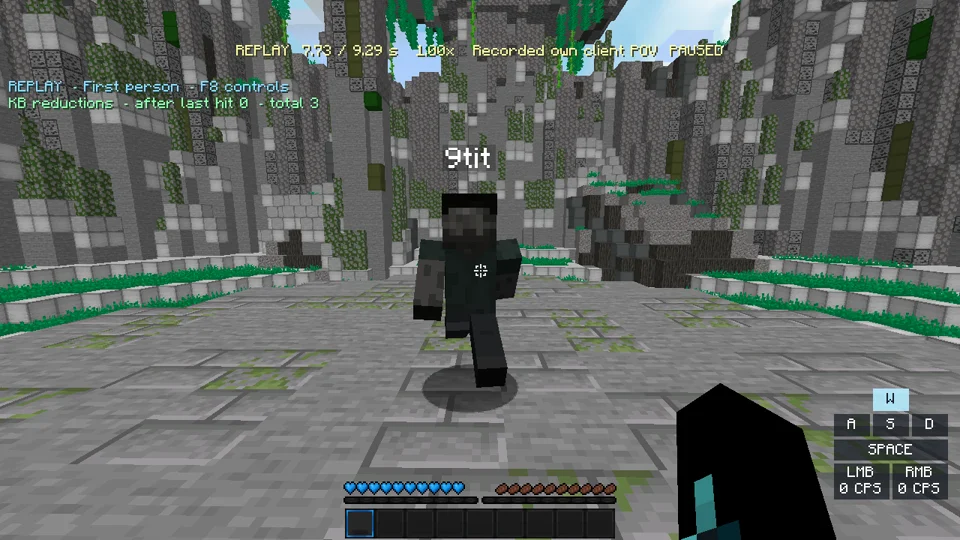
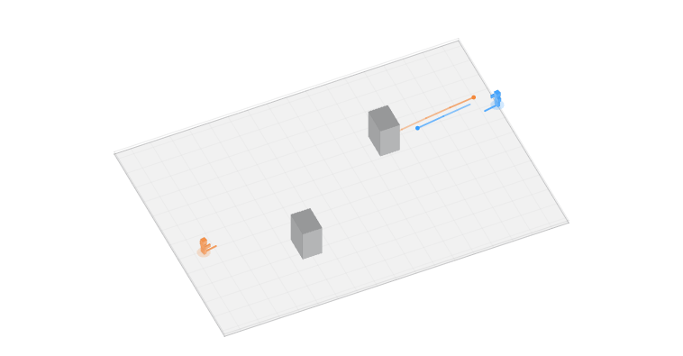

Minecraft PvP Lab · Interactive Demos
See Minecraft PvP tick by tick
Browser-ready visual explainers and 3D replay viewers from our Minecraft 1.8.9 and modern combat experiments—no Minecraft install required.

Interactive Video Guide
Why You Flew Back (Sumo Trade Review)
Step frame-by-frame through real Minemen Club sumo exchanges to see how early jumps, W-releases, miss cooldowns, and sprint-braking decide who stays on the platform.
Open interactive guide →
Interactive Physics Simulator
Movement & Knockback, One Tick at a Time
Scrub through exact Java 1.8.9 physics ticks. Toggle sprint-contact braking on or off and watch how ground vs. air friction changes backward travel to the exact floating-point bit.
Launch tick explorer →
3D Replay Viewer
Bow Duels Self-Play League
Watch evolved neural archers strafe around cover pillars, trade curved arrows, and clutch knockouts inside our Rust-accelerated 1.8.9 bow duel arena—from both orbit and first-person POV.
Watch 3D bow duels →